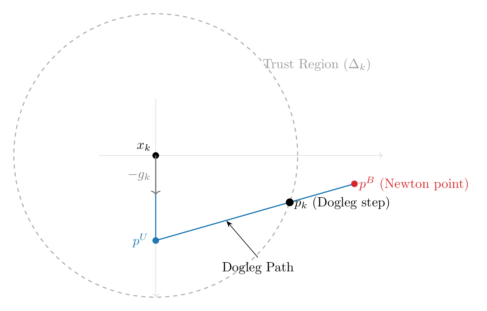

Trust Region Methods for Optimization: A Julia Overview
Trust-region methods are a class of iterative algorithms used to (i) find a root of a nonlinear set of equations or (ii) find a local minimum of a function. Unlike Line Search methods (which pick a direction and then a step length), Trust Region methods define a maximum step size $\Delta$ and then find the best step within this neighborhood[1]. In this neighborhood, it is assumed that a quadratic model $m_k(p)$ is a good approximation to $f(x_k + p)$, where $f$ is the objective function. So at each iteration one has to solve:
\[\min_{p \in \mathbb{R}^n} m_k(p) = f_k + g_k^T p + \frac{1}{2} p^T B_k p \quad \text{s.t. } \|p\| \le \Delta_k\]
Where:
- $g_k = \nabla f(x_k)$
- $B_k$ is the Hessian $\nabla^2 f(x_k)$ or an approximation thereof.
There exist different versions of trust region methods. We attempt to summarize some of them here.
In [3, 8] a trust region method is defined as follows:
1. Solve the Subproblem: Find $p_k$ that (at least approximately) solves:
\[\min_{\|p\| \le \Delta_k} m_k(p) = f_k + g_k^T p + \frac{1}{2} p^T B_k p\]
2. Evaluate the Ratio: Calculate the ratio of actual vs. predicted reduction:
\[\rho_k = \frac{f(x_k) - f(x_k + p_k)}{m_k(0) - m_k(p_k)}.\]
3. Update the Trust Region Radius:
- If $\rho_k < \frac{1}{4}$:
- $\Delta_{k+1} \gets \frac{1}{4} \Delta_k$ (The model is poor; shrink the radius)
- Else:
- If $\rho_k > \frac{3}{4}$ and $\|p_k\| = \Delta_k$:
- $\Delta_{k+1} \gets \min(2\Delta_k, \bar{\Delta})$ (The model is excellent; expand the radius)
- If $\rho_k > \frac{3}{4}$ and $\|p_k\| = \Delta_k$:
- Else:
- $\Delta_{k+1} = \Delta_k$ (The model is okay; keep the radius)
4. Update the Iterate:
- If $\rho_k > \eta$:
- $x_{k+1} \gets x_k + p_k$ (Step accepted)
- Else:
- $x_{k+1} \gets x_k$ (Step rejected)
The two references [8] and [3] treat the third step slightly differently. In [8]:
\[\begin{aligned} \Delta_{k+1} & \gets 2\Delta_{k}\quad & \text{if $||p_k|| = \Delta_{k}$,} \\ \Delta_{k+1} & \gets \Delta_{k} \quad & \text{else.} \end{aligned}\]
In [3] another hyperparameter $\bar{\Delta}$ is needed:
\[\Delta_{k+1} \gets \min(2\Delta_k, \bar{\Delta}).\]
The ratio $\rho_k$ is used to gauge the quality of the model's prediction of the function within the trust region. If $\rho_k$ is too small, the model is considered poor and the trust region is shrunk. If $\rho_k$ is too large, the model is considered excellent and the trust region is expanded. If $\rho_k$ is within a certain range, the trust region radius is kept unchanged.
Solving the Subproblem
The efficiency and convergence properties of a trust-region method depend on how the subproblem in the first step is solved. Solving the subproblem exactly can be computationally expensive for large-scale problems. Therefore, several approximate strategies are commonly used.
The Cauchy Point
The Cauchy point $p_k^C$ is the simplest approximate solution. It is defined as the minimizer of the quadratic model $m_k$ along the steepest descent direction, subject to the trust-region constraint.
To compute it, we first define the vector $p_k^s$ which is the steepest descent direction scaled to the trust-region boundary:
\[p_k^s = -\frac{\Delta_k}{\|g_k\|} g_k.\]
We then find the scalar $\tau_k > 0$ that minimizes $m_k(\tau p_k^s) = f_k + \tau{}g_k^Tp_k^s + \frac{1}{2}\tau^2(p_k^s)^TB_kp_k^s$ s.t. $\tau \le 1$:
\[\tau_k = \begin{cases} 1 & \text{if } (p_k^s)^TB_kp_k^s \le 0, \\ \min(1, -g_k^T\frac{p_k^s}{(p_k^s)^TB_kp_k^s}) & \text{otherwise.} \end{cases}\]
Note that, because $g_k^Tp_k^s$ is negative by definition, if we have $(p_k^s)^TB_kp_k^s \le 0,$ then $\tau \mapsto m_k(\tau p_k^s)$ is contiuously decreasing and hence we pick $\tau = 1$ in this case.
After we determined $\tau$, the Cauchy point is
\[p_k^C = \tau_k p_k^s.\]
In [3], it is emphasized that the Cauchy point is crucial for theory. To ensure global convergence, the solver does not need to find the exact minimizer of the subproblem; it only needs to find a step $p_k$ that provides a "sufficient reduction" in the model, specifically a reduction at least as large as a fixed fraction of the reduction provided by the Cauchy point. This is then used to e.g. show convergence of the Dogleg method.
The Dogleg Method
The Dogleg method is a more sophisticated approximation introduced by Powell [5]. It is particularly effective when the Hessian $B_k$ (or its approximation) is positive definite. It constructs a piecewise linear path from the origin to the unconstrained Newton point.
The dogleg path consists of two line segments:
1. A segment from the origin to the unconstrained minimizer along the steepest descent direction $p^U$:
\[p^U = -\frac{g_k^T g_k}{g_k^T B_k g_k} g_k.\]
This is the Cauchy point for the case $(p_k^s)^TB_kp_k^s \le 0$ and $-g_k^T\frac{p_k^s}{(p_k^s)^TB_kp_k^s} \le 1.$
2. A segment from $p^U$ to the full Newton step $p^B$:
\[p^B = -B_k^{-1} g_k.\]
The algorithm chooses $p_k$ based on the position of these points relative to the radius $\Delta_k$:
- If $\|p^B\| \le \Delta_k$, the model is trusted all the way to the Newton point; we set $p_k = p^B$.
- If $\|p^U\| \ge \Delta_k$, we take a step of length $\Delta_k$ in the steepest descent direction; $p_k = \frac{\Delta_k}{\|p^U\|} p^U$.
- If $\|p^U\| < \Delta_k < \|p^B\|$, we find the point $p_k$ where the segment connecting $p^U$ and $p^B$ intersects the trust-region boundary ($\|p_k\| = \Delta_k$).
This segment is called the dogleg path and denoted by:
\[\tilde{p}(\tau) = \begin{cases} \tau{}p^U & \text{if } \tau \in [0, 1] \\ p^U + (\tau - 1)(p^B - p^U) & \text{if } \tau \in (1, 2] \end{cases}\]
The intersection point in the third case is found by solving the quadratic equation:
\[\|p^U + (\tau - 1)(p^B - p^U)\|^2 = \Delta_k^2\]
for $\tau \in (1, 2]$. The two solutions are (for $\beta = \tau - 1$):
\[\beta = \frac{-(p^U)^T(p^B - p^U) \pm \sqrt{(p^U)^T(p^B - p^U)^2 - \|p^B - p^U\|^2(\|p^U\|^2 - \Delta_k^2)}}{\|p^B - p^U\|^2}\]
The solution that lies in the interval $(1, 2]$ is chosen.
This can be visualized:  
The Dogleg method is significantly faster than exact subproblem solvers because it only requires one linear system solve (to find $p^B$) per iteration. It offers a smooth transition between steepest descent (when the trust region is small) and Newton's method (when the trust region is large), often leading to superlinear convergence near the solution.
- 1Trust region methods can however also be used in connection with line search methods. A line search method could e.g. be used to determine a suitable $\Delta$. In [8] it is further stated that the adjustment $\Delta_{k+1} \gets \frac{1}{4} \Delta_k$ could be replaced by a line search (even though the author "expects any improvement to be marginal").